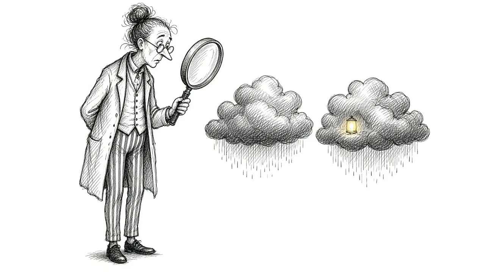

Grief vs. Depression: What's the Difference?

Grief and depression can look a lot alike. Both can bring sadness, tears, low energy, trouble sleeping, and a feeling that nothing is quite right. Many grieving people wonder whether what they are feeling is normal grief or something more.
The distinction matters, because grief and depression usually call for different kinds of care. This guide explains how they overlap, how they differ, and when it is worth reaching out for extra help. It is not a diagnostic tool. Only a qualified professional can diagnose depression. But it can help you understand what you are experiencing.
What grief is
Grief is the natural response to losing someone or something important. It is not a disorder. It includes many emotions and often affects the body, thoughts, and daily life. Grief tends to come in waves, and it is closely tied to the person who died. See What Is Grief? for a fuller picture.
What depression is
Depression is a mental health condition that affects mood, thinking, and functioning. It can be triggered by a loss, but it can also arise without a clear cause. Depression tends to involve a persistent low mood and a loss of interest or pleasure in most things, lasting for weeks or longer.
Where grief and depression overlap
Both grief and depression can include:
- Sadness and crying
- Fatigue and low energy
- Sleep problems
- Changes in appetite
- Difficulty concentrating
- Withdrawing from others
Because of this overlap, it is easy to confuse the two. It is also possible to experience both at the same time.
Key differences
1. Focus of the pain
In grief, the pain is usually centered on the loss: missing the person, longing for them, and feeling their absence. In depression, the low mood tends to be more general and is often not tied to one specific thing.
2. Waves versus a steady low
Grief often comes in waves. You might have hours or days that feel lighter, followed by intense surges. Depression is more often a steady, persistent low mood that does not lift much.
3. Capacity for positive moments
Many grieving people can still feel moments of joy, warmth, or humor, especially when remembering the person. Depression tends to dull positive feelings across the board.
4. Self-worth
Grief can bring guilt about specific things, like wishing you had said or done something differently. Depression often brings a broader sense of worthlessness or self-loathing that is not limited to the loss.
5. Hope about the future
Grieving people may feel the future is painful without the person, but they often still feel some hope or connection. Depression can bring a more pervasive hopelessness about life in general.
In grief, the world feels empty because someone is missing. In depression, you may feel empty yourself.
When grief and depression happen together
Grief can trigger depression, especially for people with a history of depression, people who lost someone very close, or people facing many stressors at once. It is not a sign of failure. It simply means the weight has become heavier than grief alone. Our guide to Grief Alongside Depression and Anxiety goes deeper on this.
Some signs that depression may be present alongside grief:
- Low mood most of the day, nearly every day, for weeks
- Losing interest in almost everything, including things unrelated to the loss
- Strong feelings of worthlessness
- Significant changes in sleep or appetite that do not ease
- Slowed thinking or movement noticed by others
- Thoughts of death that are not just about wanting to be with the person
Prolonged grief
There is also a condition called prolonged grief disorder, which is different from both normal grief and depression. It involves intense longing and preoccupation with the person who died that continues for a long time and makes daily life very difficult. Learn more in Is It Grief or Something More?.
Why getting the distinction right matters
If depression is present, support can make a real difference. Therapy, and sometimes medication, can help lift the weight of depression so that grief becomes more bearable. Treating depression does not erase grief or the love behind it. It can simply give you more capacity to carry it.
On the other hand, labeling normal grief as depression can make people feel there is something wrong with them when there is not. Grief deserves to be treated as a natural, if painful, part of life.
What helps with grief
- Allowing yourself to feel it in manageable doses
- Staying connected to the person through memories and rituals
- Leaning on people who can listen
- Caring for your body with rest, food, and movement
- Giving yourself time
What helps with depression
- Talking with a doctor or mental health professional
- Therapy approaches that target depression
- Medication, if recommended by a professional
- Gradually re-engaging with activities, even when motivation is low
- Building routines that support sleep and movement
Many of these overlap with what helps grief, which is part of why care can address both.
A gentle self-check
You might ask yourself:
- Are there still moments, even brief ones, when I feel warmth or lightness?
- Is my pain mostly about missing them, or does everything feel dark?
- Do I feel worthless in a way that goes beyond specific regrets?
- Has my low mood stayed the same for weeks without any lifting?
These questions are not a diagnosis. But if your answers point toward depression, it is worth talking with someone.
Talking to a doctor about it
If you decide to see a doctor or counselor, it can help to prepare a few notes beforehand. Write down when the loss happened, what you have been feeling, how you are sleeping and eating, and anything that has changed in your daily life. Grief can make it hard to remember details in the moment. A professional who understands grief will not rush to label your feelings, and a good one will ask about your loss as part of the conversation.
When to reach out right away
Please seek help immediately if you are having thoughts of ending your life or harming yourself. Call or text 988 to reach the Suicide and Crisis Lifeline. It is available any time, and you do not need to be in immediate danger to call.
Talking to a doctor about the difference
If you are unsure whether you are grieving, depressed, or both, a doctor or counselor can help sort it out. It can feel hard to describe, so it may help to prepare a few notes before the appointment.
- When the loss happened, and who you lost.
- How you are sleeping and eating.
- Whether you can still feel moments of warmth or connection.
- Whether you feel worthless or hopeless, not just sad.
- Any thoughts of not wanting to be alive.
Be as honest as you can. You are not complaining or exaggerating. You are giving them the information they need to help. A good clinician will not rush to treat grief as an illness, and will also take signs of depression seriously.
You deserve support either way
Whether you are grieving, depressed, or both, your pain is real and deserves care. Grief is not something to be cured, but depression is something that can be treated. Knowing the difference can help you find the support that fits. And no matter what you are facing, you do not have to face it alone.
This article is for general information and support. It is not medical or mental health advice. If grief has become unbearable or you are thinking about harming yourself, call or text 988 right now.
Related reading

Grief Alongside Depression and Anxiety
Grief often arrives alongside other mental health challenges. How to recognize overlap and get support for all of it.

Why Your Brain Keeps Replaying Their Last Days
Memories of the final days or moments can loop relentlessly. Here is why that happens and how to let the rest of their life back in.

Rumination in Grief: Getting Off the "What If" Wheel
Endless what-ifs and if-onlys can trap grieving people. Learn why rumination happens and gentle ways to step off the wheel.